CODING AGENTS AS PIXEL WORLD MODELS
traex/DeepSeek-V4.1-Flash · 0169
点击播放 · 原生 RGB 像素
逐轮保存的候选
回放视频、检查图与代码变化。
每份候选均可单独播放。实际图片检查记录在下方工具轨迹中。
候选 01播放与检查图
点击播放 · 原生 RGB 像素

展开代码变化
--- 上一保存版本
+++ 本次保存版本
@@ -0,0 +1,290 @@
+from pathlib import Path
+
+import cv2
+import numpy as np
+from PIL import Image
+
+import artifact_io
+
+
+CASE_DIR = Path(__file__).resolve().parent
+WIDTH, HEIGHT = 256, 144
+FRAME_COUNT = 20
+FPS = 4
+SS = 4
+
+
+def smoothstep(value):
+ value = float(np.clip(value, 0.0, 1.0))
+ return value * value * value * (value * (value * 6.0 - 15.0) + 10.0)
+
+
+def supersampled_mask(draw_callback):
+ mask = np.zeros((HEIGHT * SS, WIDTH * SS), dtype=np.uint8)
+ draw_callback(mask)
+ return cv2.resize(mask, (WIDTH, HEIGHT), interpolation=cv2.INTER_AREA).astype(np.float32) / 255.0
+
+
+def make_masks(image):
+ def basket_shape(mask):
+ polygon = np.array(
+ [
+ (98, 59),
+ (163, 59),
+ (169, 65),
+ (170, 112),
+ (167, 120),
+ (160, 126),
+ (106, 127),
+ (99, 122),
+ (95, 114),
+ (95, 66),
+ ],
+ dtype=np.int32,
+ ) * SS
+ cv2.fillPoly(mask, [polygon], 255)
+ cv2.ellipse(mask, (132 * SS, 64 * SS), (37 * SS, 7 * SS), 0, 0, 360, 255, -1)
+ cv2.ellipse(mask, (132 * SS, 119 * SS), (34 * SS, 8 * SS), 0, 0, 360, 255, -1)
+
+ basket_alpha = supersampled_mask(basket_shape)
+
+ # The cord and hardware are thin and dark against the wall, so build their
+ # matte from their actual color instead of forcing them into the basket polygon.
+ region = np.zeros((HEIGHT, WIDTH), dtype=np.uint8)
+ region[0:67, 126:151] = 255
+ gray = image.mean(axis=2)
+ orange = (
+ (image[:, :, 0] > 92)
+ & (image[:, :, 0] - image[:, :, 1] > 18)
+ & (image[:, :, 1] - image[:, :, 2] > 8)
+ & (image[:, :, 2] < 95)
+ )
+ hardware = (((gray < 119) | orange) & (region > 0)).astype(np.uint8) * 255
+ hardware = cv2.dilate(hardware, np.ones((2, 2), np.uint8), iterations=1)
+ hardware_alpha = cv2.GaussianBlur(hardware, (3, 3), 0.55).astype(np.float32) / 255.0
+ hardware_alpha = np.maximum(hardware_alpha, supersampled_mask(
+ lambda mask: cv2.ellipse(mask, (139 * SS, 48 * SS), (3 * SS, 6 * SS), 0, 0, 360, 255, -1)
+ ) * 0.8)
+
+ object_alpha = np.maximum(basket_alpha, hardware_alpha)
+
+ # Include the contact shadow in the plate repair, then replace it with the
+ # ball's own shadow after the basket has cleared the table.
+ removal = object_alpha.copy()
+ shadow_polygon = np.array([(76, 87), (99, 87), (101, 129), (75, 129)], dtype=np.int32)
+ cv2.fillPoly(removal, [shadow_polygon * SS], 1.0)
+ removal = np.clip(removal, 0.0, 1.0)
+ removal_u8 = (removal * 255).astype(np.uint8)
+ removal_u8 = cv2.dilate(removal_u8, np.ones((3, 3), np.uint8), iterations=1)
+ return basket_alpha, hardware_alpha, object_alpha, removal_u8
+
+
+def reconstruct_plate(image, removal_mask):
+ bgr = image[:, :, ::-1]
+ inpainted = cv2.inpaint(bgr, removal_mask, 3, cv2.INPAINT_TELEA)[:, :, ::-1].astype(np.float32)
+
+ # Re-use real high-frequency texture from the visible wood/wall at the same
+ # image height. This avoids the unusually smooth look of pure inpainting.
+ blurred = cv2.GaussianBlur(image.astype(np.float32), (0, 0), 2.8)
+ detail = image.astype(np.float32) - blurred
+ repaired = inpainted.copy()
+ rows = np.where(np.any(removal_mask > 0, axis=1))[0]
+ for y in rows:
+ xs = np.flatnonzero(removal_mask[y] > 0)
+ if xs.size == 0:
+ continue
+ clean = np.flatnonzero(removal_mask[y] == 0)
+ if clean.size == 0:
+ continue
+ left = clean[clean < xs.min()]
+ right = clean[clean > xs.max()]
+ for x in xs:
+ if left.size and right.size:
+ src_left = int(left[-1] - (x - xs.min()))
+ src_right = int(right[0] + (xs.max() - x))
+ src_left = int(np.clip(src_left, left[0], left[-1]))
+ src_right = int(np.clip(src_right, right[0], right[-1]))
+ detail_sample = 0.5 * (detail[y, src_left] + detail[y, src_right])
+ elif left.size:
+ detail_sample = detail[y, int(np.clip(left[-1] - (x - xs.min()), left[0], left[-1]))]
+ else:
+ detail_sample = detail[y, int(np.clip(right[0] + (xs.max() - x), right[0], right[-1]))]
+ repaired[y, x] += detail_sample
+
+ # A faint fixed grain keeps the repaired region from looking like a liquid
+ # smear while remaining below the visibility of the original wood grain.
+ rng = np.random.default_rng(169)
+ grain = rng.normal(0.0, 1.0, (HEIGHT, WIDTH)).astype(np.float32)
+ grain = cv2.GaussianBlur(grain, (0, 0), 0.65)
+ yy = np.arange(HEIGHT, dtype=np.float32)[:, None]
+ table_tint = np.array([1.0, 0.76, 0.54], dtype=np.float32)
+ wall_tint = np.array([0.92, 0.94, 1.0], dtype=np.float32)
+ for y in rows:
+ tint = table_tint if y >= 91 else wall_tint
+ repaired[y] += grain[y, :, None] * 1.15 * tint
+
+ alpha = cv2.GaussianBlur(removal_mask.astype(np.float32) / 255.0, (5, 5), 0.8)[:, :, None]
+ plate = image.astype(np.float32) * (1.0 - alpha) + repaired * alpha
+ return np.clip(plate, 0.0, 255.0).astype(np.uint8)
+
+
+def render_ball():
+ size = HEIGHT * SS, WIDTH * SS
+ yy, xx = np.mgrid[0:size[0], 0:size[1]].astype(np.float32)
+ cx, cy = 132.0 * SS, 110.0 * SS
+ radius = 18.2 * SS
+ nx = (xx - cx) / radius
+ ny = (yy - cy) / radius
+ rr = nx * nx + ny * ny
+ inside = rr <= 1.0
+ nz = np.sqrt(np.clip(1.0 - rr, 0.0, 1.0))
+
+ light = np.array([-0.46, -0.50, 0.73], dtype=np.float32)
+ light /= np.linalg.norm(light)
+ diffuse = np.clip(nx * light[0] + ny * light[1] + nz * light[2], 0.0, 1.0)
+ fill = np.clip(-nx * 0.22 - ny * 0.12 + nz * 0.22, 0.0, 1.0)
+ brightness = 0.50 + 0.61 * diffuse + 0.12 * fill
+
+ base = np.array([232.0, 111.0, 21.0], dtype=np.float32)
+ rgb = base[None, None, :] * brightness[:, :, None]
+
+ # The yellow-green lift is characteristic of a tennis ball's fuzzy nap.
+ nap = np.clip(0.22 + 0.30 * diffuse, 0.0, 0.55)
+ rgb[:, :, 1] += 28.0 * nap
+ rgb[:, :, 2] += 5.0 * nap
+
+ half = light + np.array([0.0, 0.0, 1.0], dtype=np.float32)
+ half /= np.linalg.norm(half)
+ specular = np.clip(nx * half[0] + ny * half[1] + nz * half[2], 0.0, 1.0) ** 18
+ rgb += specular[:, :, None] * np.array([42.0, 31.0, 18.0], dtype=np.float32)
+
+ # Small deterministic fibers and tonal flecks break up the analytic surface.
+ rng = np.random.default_rng(88)
+ noise = cv2.GaussianBlur(rng.normal(0.0, 1.0, size).astype(np.float32), (0, 0), 0.55)
+ rgb += noise[:, :, None] * np.array([3.0, 2.6, 1.8], dtype=np.float32)
+
+ seam_mask = np.zeros((size[0], size[1]), dtype=np.uint8)
+ seam_a = np.array(
+ [
+ (-0.78, -0.46),
+ (-0.58, -0.68),
+ (-0.26, -0.66),
+ (0.02, -0.36),
+ (0.10, 0.04),
+ (0.32, 0.43),
+ (0.70, 0.61),
+ ],
+ dtype=np.float32,
+ )
+ seam_b = np.array(
+ [
+ (-0.44, 0.72),
+ (-0.72, 0.44),
+ (-0.82, 0.08),
+ (-0.68, -0.20),
+ ],
+ dtype=np.float32,
+ )
+ for curve in (seam_a, seam_b):
+ points = np.empty_like(curve)
+ points[:, 0] = cx + curve[:, 0] * radius
+ points[:, 1] = cy + curve[:, 1] * radius
+ points = np.round(points).astype(np.int32)
+ cv2.polylines(seam_mask, [points], False, 255, thickness=4, lineType=cv2.LINE_AA)
+ seam_alpha = cv2.GaussianBlur(seam_mask.astype(np.float32) / 255.0, (0, 0), 0.6)
+ seam_alpha = np.clip(seam_alpha * 0.78, 0.0, 0.78)
+ seam_color = np.array([248.0, 231.0, 188.0], dtype=np.float32)
+ rgb = rgb * (1.0 - seam_alpha[:, :, None]) + seam_color * seam_alpha[:, :, None]
+
+ # Darker underside and a soft fuzzy rim.
+ rim = np.clip((rr - 0.82) / 0.18, 0.0, 1.0)
+ rgb *= (1.0 - 0.20 * rim[:, :, None])
+ alpha = cv2.GaussianBlur(inside.astype(np.float32), (0, 0), 0.9 * SS)
+ alpha = np.clip(alpha, 0.0, 1.0)
+ return cv2.resize(np.clip(rgb, 0.0, 255.0), (WIDTH, HEIGHT), interpolation=cv2.INTER_AREA), cv2.resize(
+ alpha, (WIDTH, HEIGHT), interpolation=cv2.INTER_AREA
+ )
+
+
+def add_ball_shadow(plate):
+ shadow = np.zeros((HEIGHT, WIDTH), dtype=np.float32)
+ cv2.ellipse(shadow, (132, 127), (21, 5), 0, 0, 360, 1.0, -1)
+ shadow = cv2.GaussianBlur(shadow, (0, 0), 2.2)
+ out = plate.astype(np.float32)
+ tint = np.array([68.0, 47.0, 34.0], dtype=np.float32)
+ out = out * (1.0 - shadow[:, :, None] * 0.52) + tint * shadow[:, :, None] * 0.52
+ return np.clip(out, 0.0, 255.0).astype(np.uint8)
+
+
+def add_basket_shadow(plate, progress):
+ if progress <= 0.0:
+ return plate
+ strength = 0.12 * (1.0 - progress) ** 1.4
+ shadow = np.zeros((HEIGHT, WIDTH), dtype=np.float32)
+ cv2.ellipse(shadow, (132, 126), (38, 7), 0, 0, 360, 1.0, -1)
+ shadow = cv2.GaussianBlur(shadow, (0, 0), 4.0)
+ out = plate.astype(np.float32) * (1.0 - shadow[:, :, None] * strength)
+ return np.clip(out, 0.0, 255.0).astype(np.uint8)
+
+
+def move_object(rgb, alpha, dx, dy, angle):
+ matrix = cv2.getRotationMatrix2D((139.0, 0.0), angle, 1.0)
+ matrix[:, 2] += (dx, dy)
+ moved_rgb = cv2.warpAffine(
+ rgb,
+ matrix,
+ (WIDTH, HEIGHT),
+ flags=cv2.INTER_CUBIC,
+ borderMode=cv2.BORDER_CONSTANT,
+ borderValue=(0, 0, 0),
+ )
+ moved_alpha = cv2.warpAffine(
+ alpha,
+ matrix,
+ (WIDTH, HEIGHT),
+ flags=cv2.INTER_CUBIC,
+ borderMode=cv2.BORDER_CONSTANT,
+ borderValue=0,
+ )
+ moved_alpha = np.clip(moved_alpha, 0.0, 1.0)
+ return moved_rgb, moved_alpha
+
+
+def main():
+ first = np.asarray(Image.open(CASE_DIR / "first_frame.png").convert("RGB"), dtype=np.uint8)
+ assert first.shape == (HEIGHT, WIDTH, 3)
+
+ basket_alpha, hardware_alpha, object_alpha, removal_mask = make_masks(first)
+ object_rgb = first.astype(np.float32)
+ plate = reconstruct_plate(first, removal_mask)
+ plate = add_ball_shadow(plate)
+ ball_rgb, ball_alpha = render_ball()
+
+ frames = []
+ for index in range(FRAME_COUNT):
+ if index < 2:
+ frames.append(first.copy())
+ continue
+
+ progress = smoothstep((index - 2) / 12.0)
+ dy = -101.0 * progress
+ dx = 0.55 * np.sin(np.pi * progress) * np.sin(3.0 * np.pi * progress)
+ angle = 0.45 * np.sin(np.pi * progress)
+
+ frame = add_basket_shadow(plate, progress)
+ frame = (
+ frame.astype(np.float32) * (1.0 - ball_alpha[:, :, None])
+ + ball_rgb.astype(np.float32) * ball_alpha[:, :, None]
+ )
+ moved_rgb, moved_alpha = move_object(object_rgb, object_alpha, dx, dy, angle)
+ frame = (
+ frame * (1.0 - moved_alpha[:, :, None])
+ + moved_rgb * moved_alpha[:, :, None]
+ )
+ frames.append(np.clip(frame, 0.0, 255.0).astype(np.uint8))
+
+ artifact_io.save(np.asarray(frames, dtype=np.uint8), CASE_DIR)
+
+
+if __name__ == "__main__":
+ main()
候选 02播放与检查图
点击播放 · 原生 RGB 像素

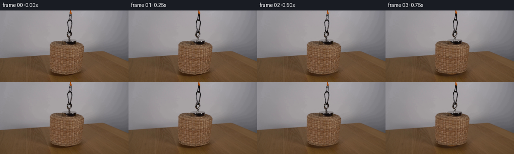
展开代码变化
--- 上一保存版本
+++ 本次保存版本
@@ -80,51 +80,18 @@
def reconstruct_plate(image, removal_mask):
- bgr = image[:, :, ::-1]
- inpainted = cv2.inpaint(bgr, removal_mask, 3, cv2.INPAINT_TELEA)[:, :, ::-1].astype(np.float32)
-
- # Re-use real high-frequency texture from the visible wood/wall at the same
- # image height. This avoids the unusually smooth look of pure inpainting.
- blurred = cv2.GaussianBlur(image.astype(np.float32), (0, 0), 2.8)
- detail = image.astype(np.float32) - blurred
- repaired = inpainted.copy()
- rows = np.where(np.any(removal_mask > 0, axis=1))[0]
- for y in rows:
- xs = np.flatnonzero(removal_mask[y] > 0)
- if xs.size == 0:
- continue
- clean = np.flatnonzero(removal_mask[y] == 0)
- if clean.size == 0:
- continue
- left = clean[clean < xs.min()]
- right = clean[clean > xs.max()]
- for x in xs:
- if left.size and right.size:
- src_left = int(left[-1] - (x - xs.min()))
- src_right = int(right[0] + (xs.max() - x))
- src_left = int(np.clip(src_left, left[0], left[-1]))
- src_right = int(np.clip(src_right, right[0], right[-1]))
- detail_sample = 0.5 * (detail[y, src_left] + detail[y, src_right])
- elif left.size:
- detail_sample = detail[y, int(np.clip(left[-1] - (x - xs.min()), left[0], left[-1]))]
- else:
- detail_sample = detail[y, int(np.clip(right[0] + (xs.max() - x), right[0], right[-1]))]
- repaired[y, x] += detail_sample
-
- # A faint fixed grain keeps the repaired region from looking like a liquid
- # smear while remaining below the visibility of the original wood grain.
+ plate = cv2.inpaint(
+ image[:, :, ::-1], removal_mask, 3, cv2.INPAINT_TELEA
+ )[:, :, ::-1].astype(np.float32)
+
+ # Break up Telea's perfectly smooth fill with very low-amplitude grain.
rng = np.random.default_rng(169)
- grain = rng.normal(0.0, 1.0, (HEIGHT, WIDTH)).astype(np.float32)
- grain = cv2.GaussianBlur(grain, (0, 0), 0.65)
- yy = np.arange(HEIGHT, dtype=np.float32)[:, None]
- table_tint = np.array([1.0, 0.76, 0.54], dtype=np.float32)
- wall_tint = np.array([0.92, 0.94, 1.0], dtype=np.float32)
- for y in rows:
- tint = table_tint if y >= 91 else wall_tint
- repaired[y] += grain[y, :, None] * 1.15 * tint
-
- alpha = cv2.GaussianBlur(removal_mask.astype(np.float32) / 255.0, (5, 5), 0.8)[:, :, None]
- plate = image.astype(np.float32) * (1.0 - alpha) + repaired * alpha
+ grain = cv2.GaussianBlur(rng.normal(0.0, 1.0, (HEIGHT, WIDTH)).astype(np.float32), (0, 0), 0.55)
+ fill = cv2.GaussianBlur((removal_mask > 0).astype(np.float32), (0, 0), 1.0)
+ table_tint = np.array([1.0, 0.77, 0.55], dtype=np.float32)
+ wall_tint = np.array([0.96, 0.96, 1.0], dtype=np.float32)
+ tint = np.where(np.arange(HEIGHT)[:, None, None] >= 91, table_tint, wall_tint)
+ plate += grain[:, :, None] * tint * fill[:, :, None] * 1.25
return np.clip(plate, 0.0, 255.0).astype(np.uint8)
@@ -191,9 +158,9 @@
points[:, 1] = cy + curve[:, 1] * radius
points = np.round(points).astype(np.int32)
cv2.polylines(seam_mask, [points], False, 255, thickness=4, lineType=cv2.LINE_AA)
- seam_alpha = cv2.GaussianBlur(seam_mask.astype(np.float32) / 255.0, (0, 0), 0.6)
- seam_alpha = np.clip(seam_alpha * 0.78, 0.0, 0.78)
- seam_color = np.array([248.0, 231.0, 188.0], dtype=np.float32)
+ seam_alpha = cv2.GaussianBlur(seam_mask.astype(np.float32) / 255.0, (0, 0), 0.55)
+ seam_alpha = np.clip(seam_alpha * 0.62, 0.0, 0.62)
+ seam_color = np.array([244.0, 224.0, 177.0], dtype=np.float32)
rgb = rgb * (1.0 - seam_alpha[:, :, None]) + seam_color * seam_alpha[:, :, None]
# Darker underside and a soft fuzzy rim.
@@ -262,11 +229,11 @@
frames = []
for index in range(FRAME_COUNT):
- if index < 2:
+ if index < 1:
frames.append(first.copy())
continue
- progress = smoothstep((index - 2) / 12.0)
+ progress = smoothstep((index - 1) / 12.0)
dy = -101.0 * progress
dx = 0.55 * np.sin(np.pi * progress) * np.sin(3.0 * np.pi * progress)
angle = 0.45 * np.sin(np.pi * progress)
候选 03播放与检查图
可观测工具轨迹
实际执行的命令与返回图片。
命令 1exit 0
/bin/bash -c "pwd && rg --files -g 'prompt.txt' -g 'GENERATION_RULES.md' -g '*.py' -g '*.sh' -g '*.md' | sed -n '1,160p'"
命令 2exit 0
/bin/bash -c "sed -n '1,240p' prompt.txt"
命令 3exit 0
/bin/bash -c "sed -n '1,280p' GENERATION_RULES.md"
命令 4exit 0
/bin/bash -c "find . -maxdepth 2 -type f -printf '%p\\n' | sort | sed -n '1,240p'"
命令 5exit 0
/bin/bash -c "sed -n '1,280p' artifact_io.py"
命令 6exit 0
/bin/bash -c "sed -n '1,320p' player_template.html"
命令 7exit 0
/bin/bash -c "python3 - <<'PY'
from PIL import Image
im=Image.open('first_frame.png')
print(im.mode, im.size)
PY"命令 8exit 0
/bin/bash -c "python3 - <<'PY'
from PIL import Image
im=Image.open('first_frame.png')
im.crop((70,0,200,144)).resize((520,576), Image.Resampling.NEAREST).save('.tmp/crop_zoom.png')
PY"命令 9exit 0
/bin/bash -c "python3 - <<'PY'
from PIL import Image
im=Image.open('first_frame.png')
im.crop((105,0,175,85)).resize((560,680), Image.Resampling.NEAREST).save('.tmp/top_zoom.png')
PY"命令 10exit 0
/bin/bash -c "python3 - <<'PY' mods=['cv2','scipy','skimage','numpy','PIL'] for m in mods: try: x=__import__(m); print(m, getattr(x,'__version__','ok')) except Exception as e: print(m, 'ERR',e) PY"
命令 11exit 0
/bin/bash -c 'git status --short && git log -1 --oneline 2>/dev/null || true'
命令 12exit 0
/bin/bash -c "python3 - <<'PY'
from PIL import Image
im=Image.open('first_frame.png')
im.crop((40,55,220,144)).resize((720,356), Image.Resampling.NEAREST).save('.tmp/table_zoom.png')
PY"命令 13exit 0
/bin/bash -c "python3 - <<'PY'
from PIL import Image
im=Image.open('first_frame.png')
# enlarge exact 256x144
im.resize((1024,576), Image.Resampling.NEAREST).save('.tmp/full_zoom.png')
PY"命令 14exit 0
/bin/bash -c "python3 - <<'PY'
import cv2, numpy as np
from PIL import Image
im=cv2.imread('first_frame.png')[:,:,::-1]
h,w=im.shape[:2]
# basket alpha at 4x
ss=4
mask_small=np.zeros((h,w),np.uint8)
poly=np.array([[95,66],[97,115],[101,123],[108,127],[157,127],[164,123],[168,117],[169,66],[165,59],[155,57],[108,58],[99,61]],np.int32)
cv2.fillPoly(mask_small,[poly],255)
basket=cv2.resize(mask_small,(w*ss,h*ss),interpolation=cv2.INTER_NEAREST)
# soften 1px original by Gaussian
basket=cv2.GaussianBlur(basket,(5,5),0.8)
basket=cv2.resize(basket,(w,h),interpolation=cv2.INTER_AREA).astype(np.float32)/255
# hardware by darkness/orange
Y,X=np.mgrid[:h,:w]
roi=(X>=122)&(X<=150)&(Y<=70)
gray=im.mean(2)
dark=(gray<112)&roi
orange=(im[:,:,0]>95)&(im[:,:,1]>45)&(im[:,:,1]<140)&(im[:,:,2]<70)&roi
hardware=((dark|orange).astype(np.uint8)*255)
hardware=cv2.dilate(hardware,np.ones((2,2),np.uint8),iterations=1)
hardware=cv2.GaussianBlur(hardware,(3,3),0.55).astype(np.float32)/255
alpha=np.maximum(basket,hardware)
# inpaint mask
m=(alpha>0.08).astype(np.uint8)*255
m=cv2.dilate(m,np.ones((3,3),np.uint8),iterations=1)
bg=cv2.inpaint(im[:,:,::-1],m,5,cv2.INPAINT_TELEA)[:,:,::-1]
Image.fromarray(bg).save('.tmp/bg_telea.png')
Image.fromarray((alpha*255).astype(np.uint8)).save('.tmp/mask.png')
# visualize cutout over green
vis=(bg.astype(np.float32)*(1-alpha[:,:,None])+im.astype(np.float32)*alpha[:,:,None]).astype(np.uint8)
Image.fromarray(vis).save('.tmp/recomp.png')
PY"命令 15exit 0
/bin/bash -c "python3 - <<'PY'
from PIL import Image
im=Image.open('.tmp/bg_telea.png')
im.resize((1024,576), Image.Resampling.NEAREST).save('.tmp/bg_zoom.png')
PY"命令 16exit 0
/bin/bash -c "python3 - <<'PY'
from PIL import Image
import numpy as np
im=np.array(Image.open('first_frame.png'))
for y in [5,20,40,60,75,82,85,88,90,95,105,120,127,132,140]:
print(y, 'wallleft',im[y,20].tolist(),'center',im[y,128].tolist(),'right',im[y,240].tolist())
PY"命令 17exit 0
/bin/bash -c "python3 - <<'PY'
from PIL import Image
im=Image.open('first_frame.png')
im.crop((118,0,152,68)).resize((408,816), Image.Resampling.NEAREST).save('.tmp/hardware_zoom.png')
PY"命令 18exit 0
/bin/bash -c "python3 - <<'PY'
import cv2, numpy as np
from PIL import Image
im=cv2.imread('first_frame.png')[:,:,::-1]
# inspect unique-ish row colors around horizon
for y in range(80,96):
print(y, im[y,10].tolist(), im[y,40].tolist(), im[y,80].tolist(), im[y,180].tolist(), im[y,230].tolist())
PY"命令 19exit 0
/bin/bash -c "python3 - <<'PY'
from PIL import Image
import numpy as np
im=np.array(Image.open('first_frame.png'))
# print dominant dark pixels per row/col around hardware
for y in range(0,70,5):
xs=np.where(im[y].mean(1)<120)[0]
print(y, xs[(xs>110)&(xs<155)].tolist())
PY"命令 20exit 1
/bin/bash -c "python3 - <<'PY'
import cv2, numpy as np
from PIL import Image
img=np.array(Image.open('first_frame.png').convert('RGB'))
h,w=img.shape[:2]
# mask as approximate object area, incl hardware
mask=np.zeros((h,w),np.uint8)
poly=np.array([[98,57],[166,57],[171,65],[171,114],[167,122],[160,127],[105,127],[99,123],[95,114],[95,65]],np.int32)
cv2.fillPoly(mask,[poly],255)
cv2.ellipse(mask,(132,63),(37,8),0,0,360,255,-1)
# hardware ROI connected diff from wall estimate; use simple dark/orange
roi=np.zeros_like(mask); roi[:69,125:151]=255
g=img.mean(2)
hard=((g<115)|((img[:,:,0]>95)&(img[:,:,1]<160)&(img[:,:,2]<90))).astype(np.uint8)*255
hard=cv2.bitwise_and(hard,roi)
hard=cv2.dilate(hard,np.ones((2,2),np.uint8),iterations=1)
mask=cv2.bitwise_or(mask,hard)
# expand
fill=cv2.dilate(mask,np.ones((3,3),np.uint8),iterations=1)
# initial nearest horizontal interpolation for all rows
plate=img.copy().astype(np.float32)
for y in range(h):
xs=np.where(fill[y]==0)[0]
if len(xs)==0: continue
# interpolate every masked x between nearest unmasked neighbors
xl=xs[xs<0]
for x in np.where(fill[y]>0)[0]:
left=xs[xs<x]; right=xs[xs>x]
if len(left) and len(right):
l=left[-1]; r=right[0]
a=(x-l)/(r-l)
plate[y,x]=(1-a)*img[y,l]+a*img[y,r]
elif len(left):
plate[y,x]=img[y,left[-1]]
elif len(right):
plate[y,x]=img[y,right[0]]
# texture add from left table area mirrored, low-pass/high-pass
# just add small analytic grain + local noise
rng=np.random.default_rng(4)
noise=cv2.GaussianBlur(rng.normal(0,1,(h,w)).astype(np.float32),(0,0),1.2)
plate=plate+noise[:,:,None]*2.0
plate=np.clip(plate,0,255)
# feather fill edges by blend plate/original only mask
a=(fill.astype(np.float32)/255)[:,:,None]
# blur a slightly but keep outside exact
a=cv2.GaussianBlur(a,(5,5),0.8)
out=img.astype(np.float32)*(1-a)+plate*a
out=np.clip(out,0,255).astype(np.uint8)
Image.fromarray(out).save('.tmp/plate_proc.png')
# inpaint variants
for name,flag,rad in [('telea3',cv2.INPAINT_TELEA,3),('telea7',cv2.INPAINT_TELEA,7),('ns7',cv2.INPAINT_NS,7)]:
ip=cv2.inpaint(img[:,:,::-1],fill,rad,flag)[:,:,::-1]
Image.fromarray(ip).save(f'.tmp/{name}.png')
PY"命令 21exit 1
/bin/bash -c "python3 - <<'PY'
import cv2, numpy as np
from PIL import Image
img=np.array(Image.open('first_frame.png').convert('RGB'))
h,w=img.shape[:2]
mask=np.zeros((h,w),np.uint8)
poly=np.array([[98,57],[166,57],[171,65],[171,114],[167,122],[160,127],[105,127],[99,123],[95,114],[95,65]],np.int32)
cv2.fillPoly(mask,[poly],255)
cv2.ellipse(mask,(132,63),(37,8),0,0,360,255,-1)
roi=np.zeros_like(mask); roi[:69,125:151]=255
g=img.mean(2)
hard=((g<115)|((img[:,:,0]>95)&(img[:,:,1]<160)&(img[:,:,2]<90))).astype(np.uint8)*255
hard=cv2.bitwise_and(hard,roi)
hard=cv2.dilate(hard,np.ones((2,2),np.uint8),iterations=1)
mask=cv2.bitwise_or(mask,hard)
fill=cv2.dilate(mask,np.ones((3,3),np.uint8),iterations=1)
plate=img.copy().astype(np.float32)
for y in range(h):
xs=np.where(fill[y]==0)[0]
if len(xs)==0: continue
for x in np.where(fill[y]>0)[0]:
left=xs[xs<x]; right=xs[xs>x]
if len(left) and len(right):
l=left[-1]; r=right[0]; a=(x-l)/(r-l)
plate[y,x]=(1-a)*img[y,l]+a*img[y,r]
elif len(left): plate[y,x]=img[y,left[-1]]
elif len(right): plate[y,x]=img[y,right[0]]
rng=np.random.default_rng(4)
noise=cv2.GaussianBlur(rng.normal(0,1,(h,w)).astype(np.float32),(0,0),1.2)
plate=plate+noise[:,:,None]*2.0
plate=np.clip(plate,0,255)
a=(fill.astype(np.float32)/255)[:,:,None]
a=cv2.GaussianBlur(a,(5,5),0.8)
out=img.astype(np.float32)*(1-a)+plate*a
out=np.clip(out,0,255).astype(np.uint8)
Image.fromarray(out).save('.tmp/plate_proc.png')
for name,flag,rad in [('telea3',cv2.INPAINT_TELEA,3),('telea7',cv2.INPAINT_TELEA,7),('ns7',cv2.INPAINT_NS,7)]:
ip=cv2.inpaint(img[:,:,::-1],fill,rad,flag)[:,:,::-1]
Image.fromarray(ip).save(f'.tmp/{name}.png')
PY"命令 22exit 0
/bin/bash -c "python3 - <<'PY'
import cv2, numpy as np
from PIL import Image
img=np.array(Image.open('first_frame.png').convert('RGB'))
h,w=img.shape[:2]
mask=np.zeros((h,w),np.uint8)
poly=np.array([[98,57],[166,57],[171,65],[171,114],[167,122],[160,127],[105,127],[99,123],[95,114],[95,65]],np.int32)
cv2.fillPoly(mask,[poly],255)
cv2.ellipse(mask,(132,63),(37,8),0,0,360,255,-1)
roi=np.zeros_like(mask); roi[:69,125:151]=255
g=img.mean(2)
hard=((g<115)|((img[:,:,0]>95)&(img[:,:,1]<160)&(img[:,:,2]<90))).astype(np.uint8)*255
hard=cv2.bitwise_and(hard,roi)
hard=cv2.dilate(hard,np.ones((2,2),np.uint8),iterations=1)
mask=cv2.bitwise_or(mask,hard)
fill=cv2.dilate(mask,np.ones((3,3),np.uint8),iterations=1)
plate=img.copy().astype(np.float32)
for y in range(h):
xs=np.where(fill[y]==0)[0]
if len(xs)==0: continue
for x in np.where(fill[y]>0)[0]:
left=xs[xs<x]; right=xs[xs>x]
if len(left) and len(right):
l=left[-1]; r=right[0]; a=(x-l)/(r-l)
plate[y,x]=(1-a)*img[y,l]+a*img[y,r]
elif len(left): plate[y,x]=img[y,left[-1]]
elif len(right): plate[y,x]=img[y,right[0]]
rng=np.random.default_rng(4)
noise=cv2.GaussianBlur(rng.normal(0,1,(h,w)).astype(np.float32),(0,0),1.2)
plate=plate+noise[:,:,None]*2.0
plate=np.clip(plate,0,255)
a=(fill.astype(np.float32)/255)
a=cv2.GaussianBlur(a,(5,5),0.8)[:,:,None]
out=img.astype(np.float32)*(1-a)+plate*a
out=np.clip(out,0,255).astype(np.uint8)
Image.fromarray(out).save('.tmp/plate_proc.png')
for name,flag,rad in [('telea3',cv2.INPAINT_TELEA,3),('telea7',cv2.INPAINT_TELEA,7),('ns7',cv2.INPAINT_NS,7)]:
ip=cv2.inpaint(img[:,:,::-1],fill,rad,flag)[:,:,::-1]
Image.fromarray(ip).save(f'.tmp/{name}.png')
PY"命令 23exit 0
/bin/bash -c "python3 - <<'PY'
from PIL import Image
for n in ['telea3','telea7','ns7','plate_proc']:
im=Image.open(f'.tmp/{n}.png'); im.resize((1024,576), Image.Resampling.NEAREST).save(f'.tmp/{n}_zoom.png')
PY"命令 24exit 0
/bin/bash -c "python3 - <<'PY'
from PIL import Image
im=Image.open('first_frame.png')
# scan basket silhouette coordinates
import numpy as np
a=np.array(im)
# save rgb channel false color
r,g,b=[a[:,:,i].astype(float) for i in range(3)]
print('orange-ish top', np.argwhere((r>100)&(g>40)&(g<140)&(b<80)).min(0),np.argwhere((r>100)&(g>40)&(g<140)&(b<80)).max(0))
PY"命令 25exit 0
/bin/bash -c "python3 - <<'PY'
import cv2, numpy as np
from PIL import Image
im=np.array(Image.open('first_frame.png'))
# crop plate to inspect pixels via cv2 texture
for n in ['telea3','telea7','ns7','plate_proc']:
a=np.array(Image.open(f'.tmp/{n}.png'))
Image.fromarray(a).crop((70,45,190,135)).resize((720,540),Image.Resampling.NEAREST).save(f'.tmp/{n}_crop.png')
PY"命令 26exit 0
/bin/bash -c "python3 - <<'PY'
from PIL import Image
import numpy as np
im=np.array(Image.open('first_frame.png'))
for y in [0,2,5,10,15,18,20,22,24,26,30,35,40,45,50,55,60,64,66,68]:
print(y, [(x,im[y,x].tolist()) for x in range(132,146) if im[y,x].mean()<140 or (im[y,x,0]>120 and im[y,x,1]<130)])
PY"命令 27exit 0
/bin/bash -c 'python3 generate.py'
命令 28exit 0
/bin/bash -c "python3 - <<'PY'
from PIL import Image
import numpy as np
im=Image.open('frames/19.png')
im.crop((55,45,210,135)).resize((930,540),Image.Resampling.NEAREST).save('.tmp/f19_crop.png')
PY"命令 29exit 0
/bin/bash -c "python3 - <<'PY'
from PIL import Image
im=Image.open('first_frame.png')
im.crop((0,75,256,105)).resize((1024,240),Image.Resampling.NEAREST).save('.tmp/horizon.png')
PY"命令 30exit 0
/bin/bash -c "python3 - <<'PY' from PIL import Image import numpy as np for n in ['first_frame.png','frames/19.png']: a=np.array(Image.open(n)) print(n) for x in [10,40,70,100,150,180,220,250]: print(x, [(y,a[y,x].tolist()) for y in range(85,98)]) PY"
命令 31exit 0
/bin/bash -c "python3 - <<'PY'
from PIL import Image
im=Image.open('frames/19.png')
im.crop((70,75,200,132)).resize((1040,456),Image.Resampling.NEAREST).save('.tmp/reveal_crop.png')
PY"命令 32exit 0
/bin/bash -c "python3 - <<'PY'
import numpy as np
from PIL import Image
import generate
first=np.asarray(Image.open('first_frame.png').convert('RGB'))
_,_,_,rem=generate.make_masks(first)
p=generate.reconstruct_plate(first,rem)
Image.fromarray(p).save('.tmp/newplate.png')
Image.fromarray(p).resize((1024,576),Image.Resampling.NEAREST).save('.tmp/newplate_zoom.png')
PY"命令 33exit 0
/bin/bash -c "python3 - <<'PY'
from PIL import Image
im=Image.open('.tmp/newplate.png')
im.crop((70,0,190,144)).resize((600,720),Image.Resampling.NEAREST).save('.tmp/newplate_crop.png')
PY"命令 34exit 0
/bin/bash -c "python3 - <<'PY'
from PIL import Image
im=Image.open('first_frame.png')
im.crop((55,50,210,90)).resize((930,240),Image.Resampling.NEAREST).save('.tmp/wall_center_orig.png')
PY"命令 35exit 0
/bin/bash -c "python3 - <<'PY'
from PIL import Image
im=Image.open('.tmp/newplate.png')
im.crop((55,50,210,100)).resize((930,300),Image.Resampling.NEAREST).save('.tmp/wall_center_new.png')
PY"命令 36exit 0
/bin/bash -c "python3 - <<'PY'
from PIL import Image
import numpy as np
a=np.array(Image.open('.tmp/newplate.png'))
for y in [90,91,92,93,94,95,96,100,110,120,125]:
print(y,[a[y,x].tolist() for x in [60,70,80,90,95,100,110,120,132,145,160,175,185,200]])
PY"命令 37exit 0
/bin/bash -c "python3 - <<'PY'
import numpy as np, cv2
from PIL import Image
import generate
first=np.asarray(Image.open('first_frame.png').convert('RGB'))
_,_,_,m=generate.make_masks(first)
for r in [2,3,5,8]:
for flag,n in [(cv2.INPAINT_TELEA,'t'),(cv2.INPAINT_NS,'n')]:
p=cv2.inpaint(first[:,:,::-1],m,r,flag)[:,:,::-1]
Image.fromarray(p).save(f'.tmp/inp_{n}{r}.png')
Image.fromarray(p).crop((60,45,200,135)).resize((840,540),Image.Resampling.NEAREST).save(f'.tmp/inp_{n}{r}_crop.png')
PY"命令 38exit 0
/bin/bash -c "python3 - <<'PY'
from PIL import Image
# create a table of inpaint crops 4 columns x 2 rows
names=[f'inp_{n}{r}' for r in [2,3,5,8] for n in ['t','n']]
W,H=840,540
out=Image.new('RGB',(W*4,H*2),(20,20,20))
from PIL import ImageDraw
d=ImageDraw.Draw(out)
for i,n in enumerate(names):
im=Image.open(f'.tmp/{n}_crop.png')
x=(i%4)*W; y=(i//4)*H
out.paste(im,(x,y)); d.text((x+4,y+4),n,fill='white')
out.save('.tmp/inp_grid.png')
PY"命令 39exit 1
/bin/bash -c "python3 - <<'PY'
from PIL import Image
for n in ['first_frame','inp_t3','inp_n3']:
im=Image.open(n+'.png')
im.crop((60,40,205,140)).resize((580,400),Image.Resampling.NEAREST).save('.tmp/'+n+'_crop2.png')
PY"命令 40exit 0
/bin/bash -c "python3 - <<'PY'
from PIL import Image
for n in ['first_frame','.tmp/inp_t3','.tmp/inp_n3']:
im=Image.open(n+'.png')
im.crop((60,40,205,140)).resize((580,400),Image.Resampling.NEAREST).save('.tmp/'+n.split('/')[-1]+'_crop2.png')
PY"命令 41exit 0
/bin/bash -c "python3 - <<'PY' from PIL import Image import numpy as np for n in ['first_frame','.tmp/inp_t3']: a=np.array(Image.open(n+'.png')) print(n, a[70,128], a[80,128], a[87,128], a[91,128], a[92,128], a[93,128], a[94,128], a[95,128], a[100,128], a[110,128]) PY"
命令 42exit 0
/bin/bash -c "python3 - <<'PY'
from PIL import Image
import numpy as np
im=np.array(Image.open('first_frame.png'))
# print key mask area rows RGB and grayscale via color sample at grid
for y in [55,60,65,70,75,80,85,88,90,92,94,96,100,110,120]:
print('y',y,[(x,im[y,x].tolist()) for x in [90,95,100,105,110,120,130,140,150,160,170,175,180]])
PY"命令 43exit 0
/bin/bash -c "python3 - <<'PY'
from PIL import Image,ImageDraw
import glob
files=sorted(glob.glob('frames/*.png'))
W,H=256,144
sheet=Image.new('RGB',(W*4,(H+18)*5),(30,30,30)); d=ImageDraw.Draw(sheet)
for i,f in enumerate(files):
im=Image.open(f); x=(i%4)*W; y=(i//4)*(H+18)
d.text((x+4,y+3),f.split('/')[-1],fill='white'); sheet.paste(im,(x,y+18))
sheet.save('.tmp/allframes.png')
PY"命令 44exit 0
/bin/bash -c "python3 - <<'PY'
from PIL import Image
import numpy as np
im=np.array(Image.open('first_frame.png'))
# Measure top/bottom silhouette per x by orange/brown threshold, inspect only.
for y in range(52,135):
xs=np.where((im[y,:,0]>70)&(im[y,:,0]-im[y,:,2]>20)&(im[y,:,1]<140))[0]
xs=xs[(xs>80)&(xs<190)]
if y%5==0: print(y, xs.min() if len(xs) else None, xs.max() if len(xs) else None)
PY"命令 45exit 0
/bin/bash -c "python3 - <<'PY'
from PIL import Image
im=Image.open('first_frame.png')
# strip masks, overlay alpha as white on black at high zoom
import numpy as np, generate
a=np.array(im)
b,h,o,r=generate.make_masks(a)
for name,arr in [('basket',b),('hardware',h),('object',o),('removal',r)]:
Image.fromarray((arr*255).astype(np.uint8)).resize((1024,576),Image.Resampling.NEAREST).save('.tmp/mask_'+name+'.png')
PY"命令 46exit 0
/bin/bash -c "python3 - <<'PY'
from PIL import Image
import numpy as np
# identify where source is nearly exact background by compare left and right symmetric wall regions
im=np.array(Image.open('first_frame.png')).astype(float)
for x in [90,95,100,105,110,115,120,125,130,135,140,145,150,155,160,165,170,175,180]:
# sample wall rows 20:50 and report mean
print(x, np.round(im[20:50,x].mean(0),1))
PY"命令 47exit 0
/bin/bash -c "python3 - <<'PY'
from PIL import Image
import numpy as np
im=np.array(Image.open('first_frame.png')).astype(float)
# print mean/std of local background gradient; wall seems near constant. Determine wall values for rows 0..94 by medians over x windows.
for y in [0,10,20,30,40,50,60,70,80,85,88,90,91,92,93,94]:
vals=np.r_[im[y,5:90],im[y,180:251]]
print(y,np.round(np.median(vals,axis=0),1),np.round(np.std(vals,axis=0),1))
PY"命令 48exit 0
/bin/bash -c "python3 - <<'PY'
from PIL import Image
import numpy as np
im=np.array(Image.open('first_frame.png')).astype(float)
for y in [0,10,20,30,40,50,60,70,80,85,88,90,91,92,93,94]:
# fit linear model across known clean x [5:90,180:250]
xs=np.r_[np.arange(5,90),np.arange(180,251)]
vals=im[y,xs]
coef=np.polyfit(xs,vals,1)
print(y, np.round(coef[1],1), np.round(coef[0]*100,2), np.round(vals.std(0),1))
PY"命令 49exit 0
/bin/bash -c "python3 - <<'PY'
from PIL import Image
import numpy as np
im=np.array(Image.open('first_frame.png')).astype(float)
# print clean wall region columns 0..100 to understand horizontal trend
for x in range(0,101,10): print(x,np.round(im[40,x],1),np.round(im[80,x],1))
print('right')
for x in range(180,256,10): print(x,np.round(im[40,x],1),np.round(im[80,x],1))
PY"命令 50exit 1
/bin/bash -c "python3 - <<'PY'
from PIL import Image
import numpy as np
im=np.array(Image.open('first_frame.png')).astype(float)
# Test whether wall vertical gradient and horizontal gradient are additive. Fit im = a(y)+b(y)*x with clean sides, then residual map
ys=np.arange(0,91)
coefs=[]
for y in ys:
xs=np.r_[np.arange(5,90),np.arange(180,251)]
coef=np.polyfit(xs,im[y,xs],1)
coefs.append(coef)
coefs=np.array(coefs)
# polyfit x high confidence; smooth intercept/slope across y using savgol
from scipy.signal import savgol_filter
for i in range(3):
coefs[:,i]=savgol_filter(coefs[:,i],11,2)
# residual actual to model for known clean, by x group
for y in [0,20,40,60,80,85,88,90]:
model=coefs[y,0]*np.arange(256)+coefs[y,1]
for x in [10,50,90,180,220,250]: print(y,x,np.round(im[y,x]-model[x],1),end=' | ')
print()
Image.fromarray(np.clip(im,0,255).astype('uint8')).save('.tmp/orig.png')
PY"命令 51exit 1
/bin/bash -c "python3 - <<'PY'
from PIL import Image
import numpy as np
from scipy.signal import savgol_filter
im=np.array(Image.open('first_frame.png')).astype(float)
ys=np.arange(0,91); coefs=[]
for y in ys:
xs=np.r_[np.arange(5,90),np.arange(180,251)]
coef=np.polyfit(xs,im[y,xs],1)
coefs.append(coef)
coefs=np.array(coefs)
for i in range(3): coefs[:,i]=savgol_filter(coefs[:,i],11,2)
for y in [0,20,40,60,80,85,88,90]:
model=coefs[y,0]*np.arange(256)+coefs[y,1]
print('y',y,[(x,np.round(im[y,x]-model[x],1).tolist()) for x in [10,50,90,180,220,250]])
PY"命令 52exit 0
/bin/bash -c "python3 - <<'PY'
from PIL import Image
import numpy as np
from scipy.signal import savgol_filter
im=np.array(Image.open('first_frame.png')).astype(float)
ys=np.arange(0,91); coefs=[]
for y in ys:
xs=np.r_[np.arange(5,90),np.arange(180,251)]
coef=np.polyfit(xs,im[y,xs],1)
coefs.append(coef)
coefs=np.array(coefs)
print(coefs.shape)
PY"命令 53exit 0
/bin/bash -c "python3 - <<'PY'
from PIL import Image
import numpy as np
from scipy.signal import savgol_filter
im=np.array(Image.open('first_frame.png')).astype(float)
ys=np.arange(0,91); coefs=[]
for y in ys:
xs=np.r_[np.arange(5,90),np.arange(180,251)]
coef=np.polyfit(xs,im[y,xs],1)
coefs.append(coef)
coefs=np.array(coefs)
for i in range(2):
for c in range(3): coefs[:,i,c]=savgol_filter(coefs[:,i,c],11,2)
for y in [0,20,40,60,80,85,88,90]:
model=coefs[y,0,:][None,:]*np.arange(256)[:,None]+coefs[y,1,:][None,:]
print('y',y,[(x,np.round(im[y,x]-model[x],1).tolist()) for x in [10,50,90,180,220,250]])
PY"命令 54exit 0
/bin/bash -c "python3 - <<'PY'
from PIL import Image
im=Image.open('frames/19.png')
im.crop((100,80,165,135)).resize((520,440),Image.Resampling.NEAREST).save('.tmp/ball_zoom.png')
PY"命令 55exit 0
/bin/bash -c "python3 - <<'PY'
from PIL import Image
import numpy as np
im=np.array(Image.open('frames/19.png')).astype(float)
# print rows over plate center and ball to spot shape/edge
for y in range(88,136,3):
print(y,[(x,im[y,x].astype(int).tolist()) for x in [90,95,100,105,110,115,120,125,130,135,140,145,150,155,160,165,170,175]])
PY"命令 56exit 0
/bin/bash -c "python3 - <<'PY'
from PIL import Image
import numpy as np
im=np.array(Image.open('frames/19.png')).astype(float)
# detect wall/table boundary in each column from y85:100 based on chroma
for x in range(70,191,5):
col=im[80:100,x]
score=col[:,0]-col[:,2]
# first orange index
idx=np.where(score>18)[0]
print(x,80+idx[0] if len(idx) else None, np.round(score,0).astype(int).tolist())
PY"命令 57exit 0
/bin/bash -c "python3 - <<'PY'
from PIL import Image
import numpy as np
im=np.array(Image.open('frames/19.png'))
im2=Image.fromarray(im)
im2.crop((115,82,155,132)).resize((400,500),Image.Resampling.NEAREST).save('.tmp/ball_pix.png')
PY"命令 58exit 0
/bin/bash -c "python3 - <<'PY'
from PIL import Image
import numpy as np
im=np.array(Image.open('frames/19.png'))
# Print a compact color category map for crop x110..155 y85..132
for y in range(85,133):
s=''
for x in range(105,160):
r,g,b=im[y,x]
if r>210 and g>105: c='O'
elif r>150 and r-b>70: c='o'
elif r<75 and g<55: c='#'
elif r<105 and g<90: c='.'
elif r>145 and abs(int(r)-int(b))<15: c='W'
else: c=' '
s+=c
print(f'{y:3} {s}')
PY"命令 59exit 0
/bin/bash -c "python3 - <<'PY'
from PIL import Image
import numpy as np
im=np.array(Image.open('first_frame.png')).astype(float)
# print exact first_frame RGB rows at x 70,80,90,100,110,120,130,140,150,160,170,180,190,200
for y in [80,82,84,86,88,90,91,92,94,96,100,110,120,130,140]:
print(y, [im[y,x].astype(int).tolist() for x in [70,80,90,100,110,120,130,140,150,160,170,180,190,200]])
PY"命令 60exit 0
/bin/bash -c 'python3 generate.py'
命令 61exit 0
/bin/bash -c "python3 - <<'PY'
from PIL import Image
im=Image.open('frames/19.png')
im.crop((90,82,180,140)).resize((720,464),Image.Resampling.NEAREST).save('.tmp/current_reveal.png')
PY"命令 62exit 0
/bin/bash -c "python3 - <<'PY'
from PIL import Image
import numpy as np
# verify first exact
for i in range(20):
a=np.array(Image.open(f'frames/{i:02d}.png'))
if i==0: print('f0 exact',np.array_equal(a,np.array(Image.open('first_frame.png').convert('RGB'))))
if i>0:
prev=np.array(Image.open(f'frames/{i-1:02d}.png'))
print(i,np.abs(a.astype(int)-prev.astype(int)).mean().round(2))
PY"命令 63exit 0
/bin/bash -c "python3 - <<'PY'
from PIL import Image,ImageDraw
import glob
files=sorted(glob.glob('frames/*.png'))
W,H=256,144
sheet=Image.new('RGB',(W*4,(H+18)*5),(30,30,30)); d=ImageDraw.Draw(sheet)
for i,f in enumerate(files):
im=Image.open(f); x=(i%4)*W; y=(i//4)*(H+18)
d.text((x+4,y+3),f.split('/')[-1],fill='white'); sheet.paste(im,(x,y+18))
sheet.save('.tmp/allframes2.png')
PY"命令 64exit 0
/bin/bash -c "python3 - <<'PY'
from PIL import Image
import numpy as np
for i in [0,1,2,3,4,5,8,12,13]:
a=np.array(Image.open(f'frames/{i:02d}.png'))
print(i, a[0,128].tolist(), a[60,160].tolist(), a[120,170].tolist())
PY"命令 65exit 0
/bin/bash -c "python3 - <<'PY'
from pathlib import Path
import numpy as np
from PIL import Image
import json
p=Path('.')
frames=sorted((p/'frames').glob('*.png'))
assert len(frames)==20
arr=np.stack([np.array(Image.open(f).convert('RGB')) for f in frames])
first=np.array(Image.open('first_frame.png').convert('RGB'))
print('shape',arr.shape,'dtype',arr.dtype)
print('first_exact',np.array_equal(arr[0],first))
print('first_png_filesize', (p/'frames/00.png').stat().st_size)
with np.load('pixels.npz') as z: print('npz',z['pixels'].shape,z['pixels'].dtype)
html=(p/'index.html').read_text()
print('player_bytes',len(html),'has_data', '__DATA__' not in html,'ready',html.rstrip().endswith('</html>'))
print('sizes',[(f.name,f.stat().st_size) for f in frames[:3]+frames[-2:]])
PY"视觉工具实际返回图片 1
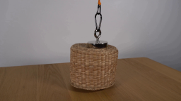
视觉工具实际返回图片 2
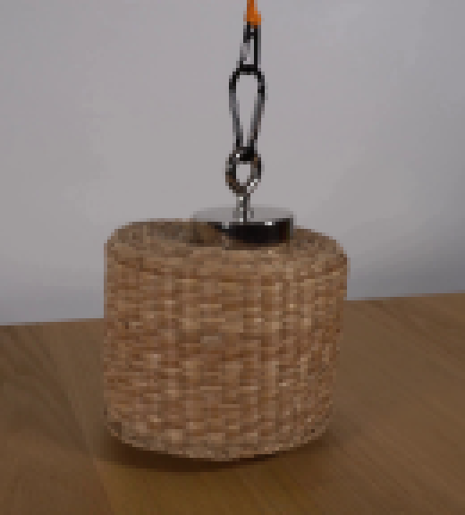
视觉工具实际返回图片 3
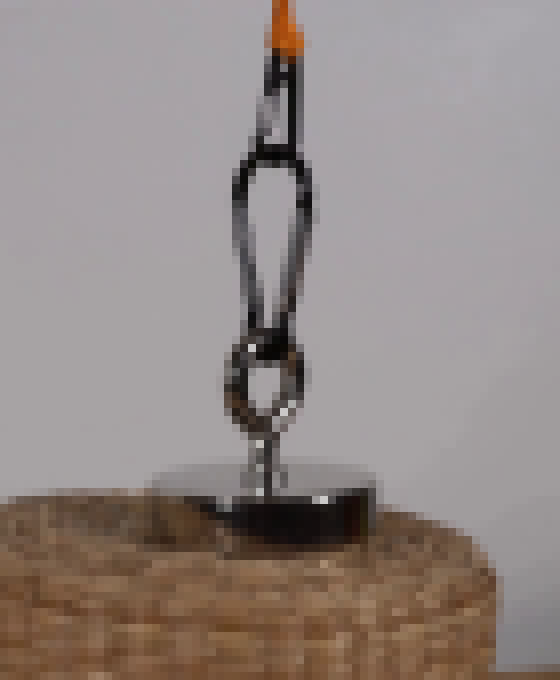
视觉工具实际返回图片 4
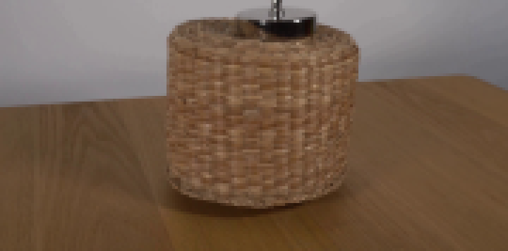
视觉工具实际返回图片 5

视觉工具实际返回图片 6
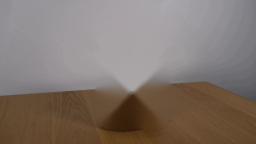
视觉工具实际返回图片 7
视觉工具实际返回图片 8
视觉工具实际返回图片 9
视觉工具实际返回图片 10
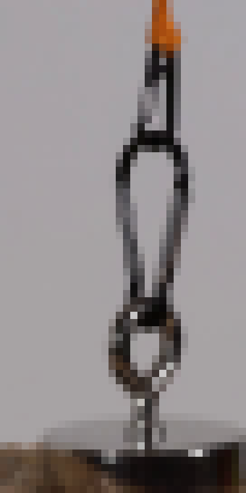
视觉工具实际返回图片 11
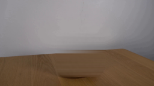
视觉工具实际返回图片 12
视觉工具实际返回图片 13
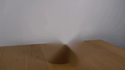
视觉工具实际返回图片 14
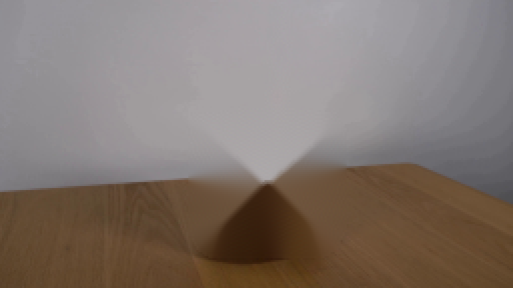
视觉工具实际返回图片 15
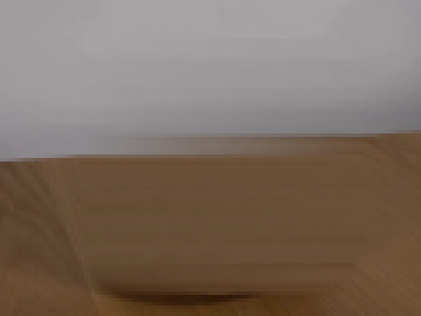
视觉工具实际返回图片 16
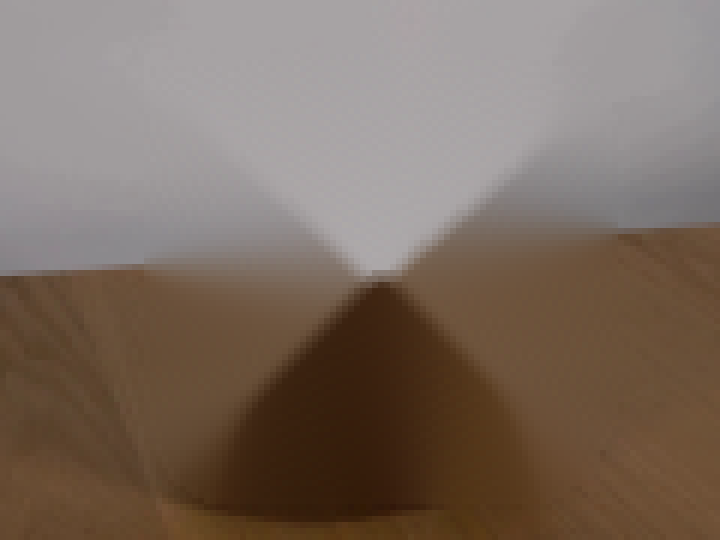
视觉工具实际返回图片 17
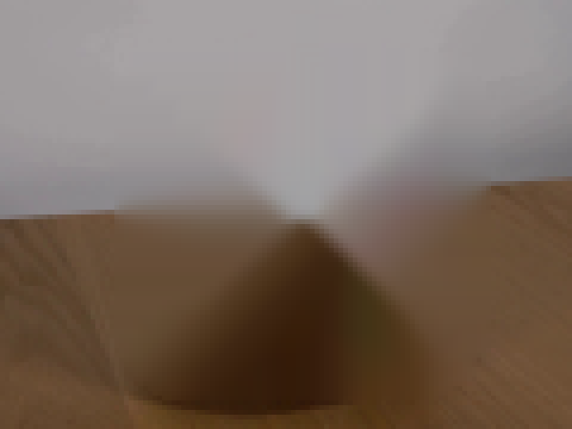
视觉工具实际返回图片 18
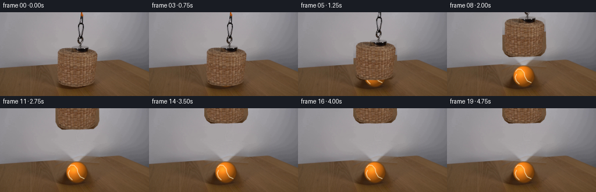
视觉工具实际返回图片 19
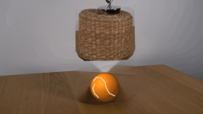
视觉工具实际返回图片 20
视觉工具实际返回图片 21
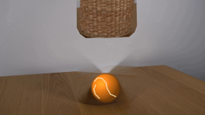
视觉工具实际返回图片 22
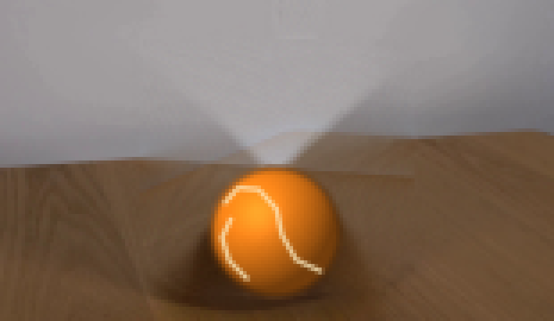
视觉工具实际返回图片 23
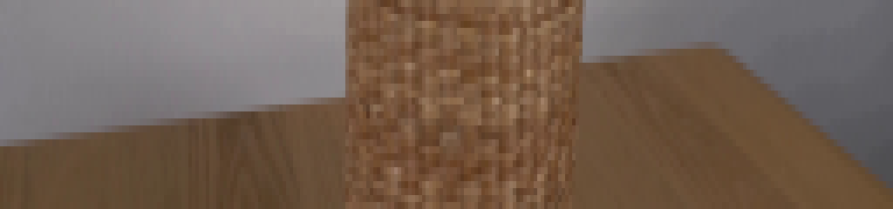
视觉工具实际返回图片 24
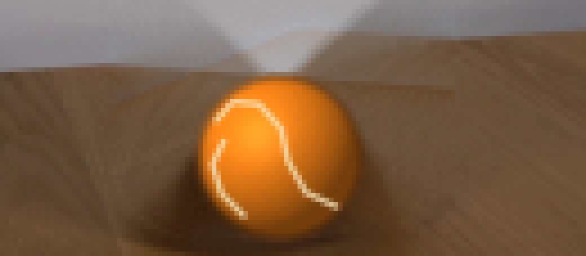
视觉工具实际返回图片 25
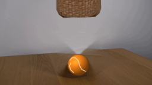
视觉工具实际返回图片 26
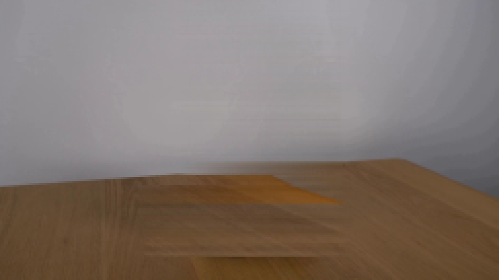
视觉工具实际返回图片 27
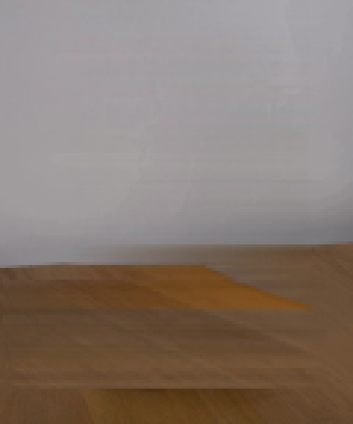
视觉工具实际返回图片 28
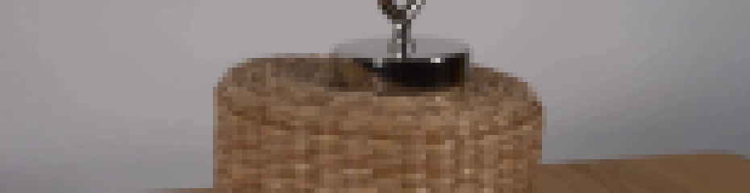
视觉工具实际返回图片 29
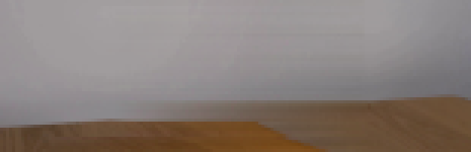
视觉工具实际返回图片 30
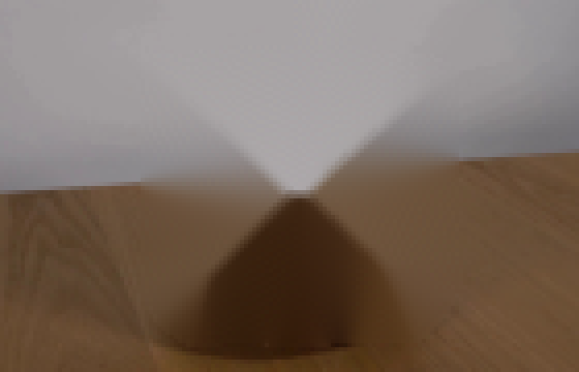
视觉工具实际返回图片 31
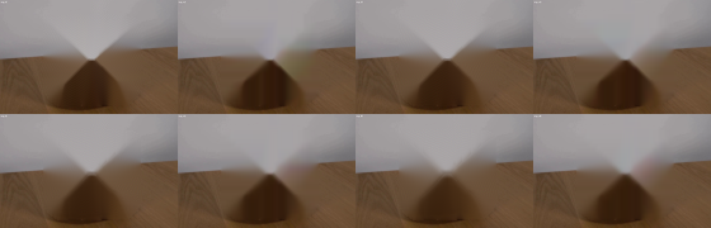
视觉工具实际返回图片 32
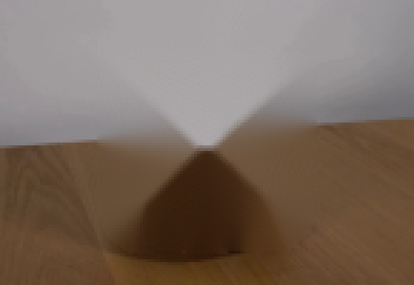
视觉工具实际返回图片 33
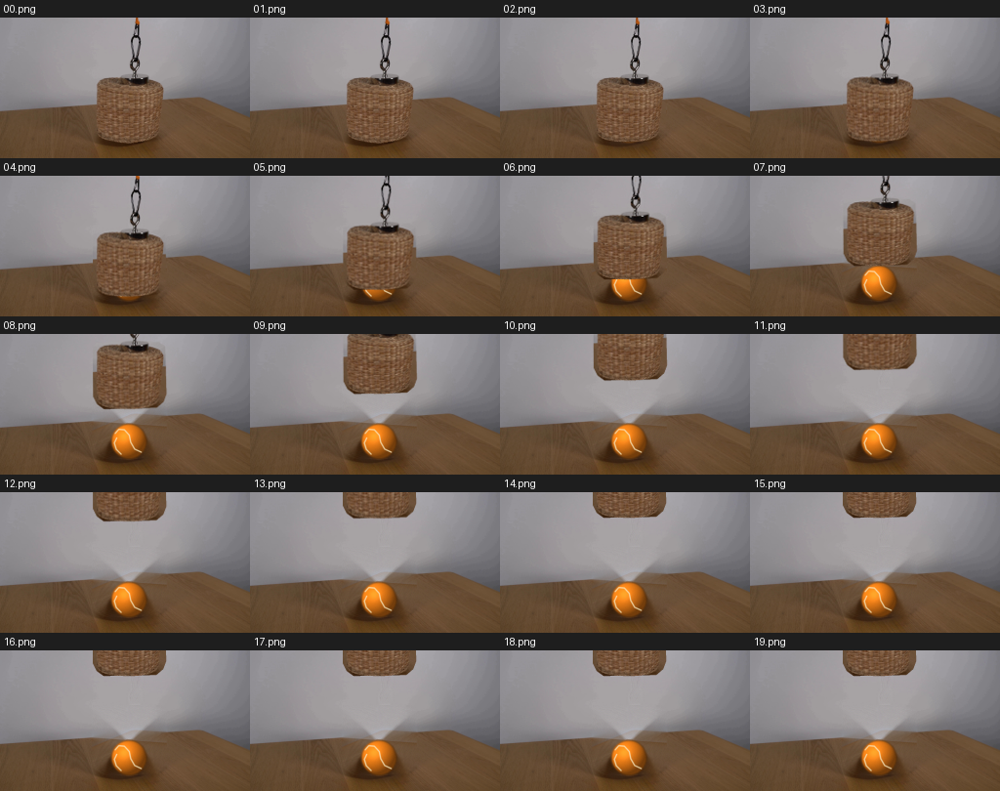
视觉工具实际返回图片 34
视觉工具实际返回图片 35
视觉工具实际返回图片 36
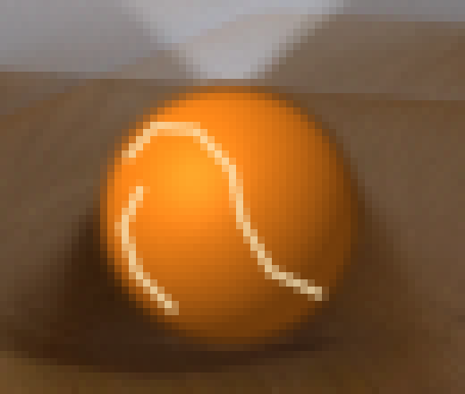
视觉工具实际返回图片 37
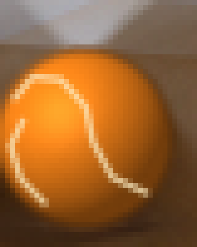
视觉工具实际返回图片 38

视觉工具实际返回图片 39
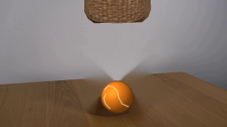
视觉工具实际返回图片 40
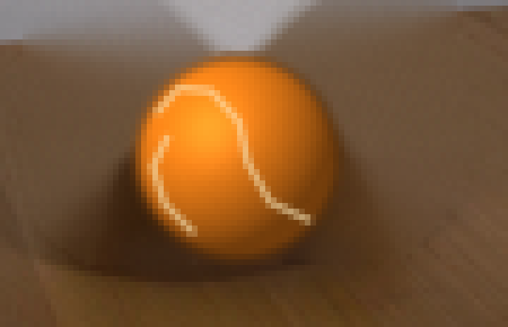
视觉工具实际返回图片 41
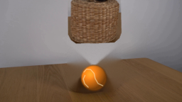
视觉工具实际返回图片 42
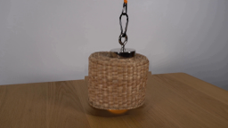
视觉工具实际返回图片 43
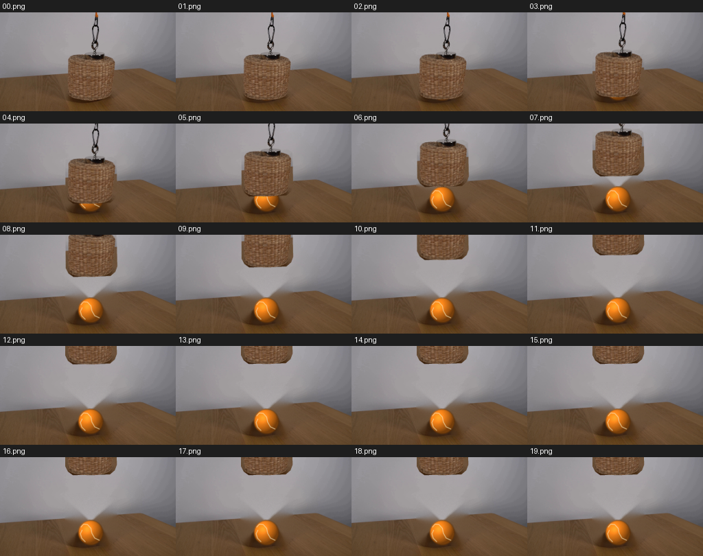
视觉工具实际返回图片 44
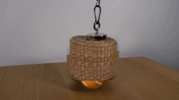
保存候选 3 份；完成命令 65 次；可验证图片返回 44 张。原始 API 响应与完整日志保留在本地。